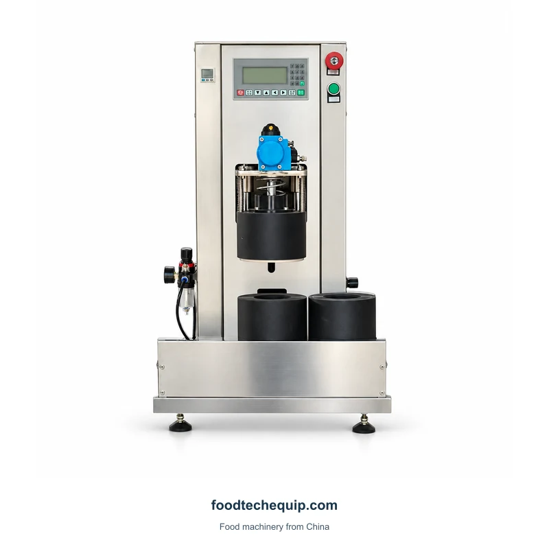
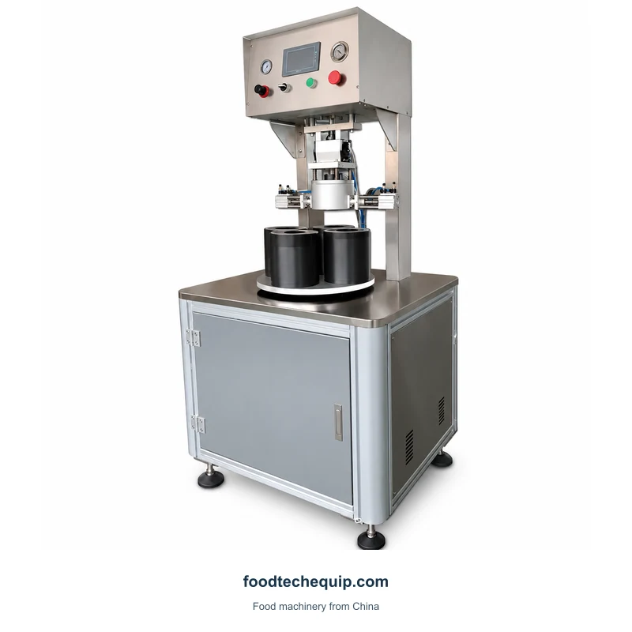

إغلاق العبوات الزجاجية بالتفريغ
آلة إغلاق العبوات الزجاجية بالتفريغ بخيارات آلية ودوّارة
معدات لإغلاق العبوات الزجاجية بالتفريغ، بخيارات آلية ودوّارة وأخرى بمحطتين.
عرض المعداتابدأ بمطابقة فوهة العبوة الزجاجية مع غطائها، ثم قارن طريقة إدخال العبوات المعبأة وإخراجها في كل محطة. راجع المواصفات الكهربائية في صفحة التجهيز الذي تفكر فيه.

معدات لإغلاق العبوات الزجاجية بالتفريغ، بخيارات آلية ودوّارة وأخرى بمحطتين.
عرض المعدات
آلة إغلاق العبوات الزجاجية بالتفريغ، مزودة بحوامل للعبوات وأدوات تحكم أمامية.
عرض المعدات
آلة إغلاق بالتفريغ تعمل بجهد 220 V. قدرة التجهيز بمحطتين 0.5 kW وقدرة التجهيز بأربع محطات 0.9 kW.
عرض المعدات
آلة شبه آلية لإغلاق العبوات الزجاجية بالتفريغ، بقاعدة خزانة ورأس إغلاق.
عرض المعدات
معدات شبه آلية لإغلاق العبوات الزجاجية بالتفريغ بتجهيزات بمحطتين أو أربع محطات.
عرض المعدات
آلة إغلاق بالتفريغ بمحطتين أو أربع محطات. الجهد المقنن للتجهيز بمحطتين 220 V وقدرته المقننة 1.2 kW.
عرض المعدات
معدات شبه آلية لإغلاق العبوات الزجاجية بالتفريغ بتجهيز يضم أربع محطات.
عرض المعداتجرّب كلمة رئيسية مختلفة أو امسح عوامل التصفية.
أرسل بيانات العبوة وغطائها المتوافق، بما في ذلك أبعاد الفوهة ونوع البطانة أو الحشية. توضح هذه المعلومات نظام الإغلاق المطلوب.
حدّد تسلسل التحميل وترتيب المحطات ونتيجة الإغلاق المطلوبة. اذكر أيضًا طريقة فحص الإغلاق النهائي للمنتج.
| منطقة التحديد | ماذا تقارن | ما الذي ينبغي تقديمه |
|---|---|---|
| فوهة العبوة الزجاجية | الفوهة والغطاء المتوافق معها | العبوة وغطاؤها المتوافق |
| ترتيب المحطة | تسلسل التحميل والتفريغ | إدخال المحطة المحدد ومهمة المشغل |
| النتيجة الختامية | فحص الإغلاق النهائي | البطانة أو الحشية وطريقة التقييم |
حدّد فوهة العبوة والغطاء المناسب، ثم اشرح النتيجة المطلوبة وطريقة التحميل. عند مقارنة آلات تغطية الزجاجات، استخدم الزجاجة والغطاء المخصّصين لكل عملية.